CAP / Build Journal
The Makings of a Pervert Detector
I started with a question about who gets to record us. Seven weeks of ideating, prototyping, and iterating later, I had CAP, a wearable privacy device with a little companion named Cappy who looks out for you.
View process PDF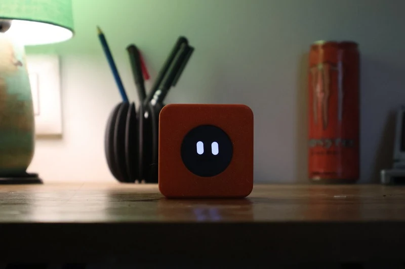
01 / The beginning
Coming up with the idea
During orientation week, one of our professors asked us to imagine ourselves five years into the future and write a newspaper article about it. I was feeling pretty disillusioned by the direction tech was going, so I wrote a hit piece on future me for selling out and creating “AI and AR powered smart glasses for cats.” It was funny, but the worry behind it was real.
Our studio assignment was to look at a controversial technology, see how people were responding, and come up with our own response. I’d been thinking about Meta glasses since orientation. Camera-equipped glasses were making it easier to record people without asking, while the people being recorded had very little say.
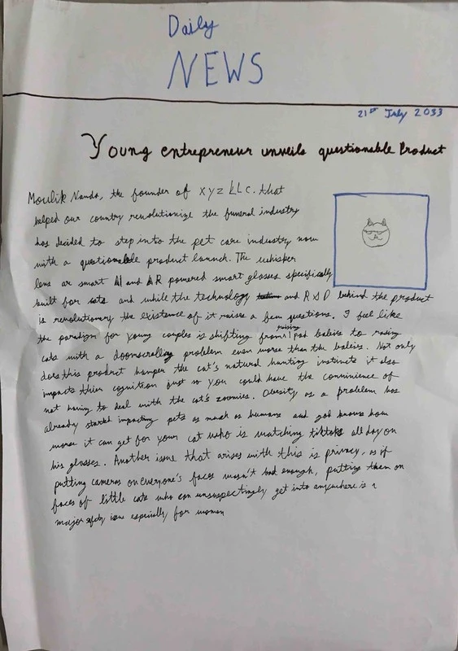
Three possible responses
I explored three ideas. A malicious QR code might exploit the glasses’ automatic scanning, but that route had already been patched after Google Glass. Anti-facial-recognition clothing could disrupt some computer vision systems, but wouldn’t stop someone recording a video. A wearable BLE detector felt like the most useful direction: make the presence of the device visible to the people around it.
02 / Form & parts
Finding something I’d want to wear
I called the project CAP, short for Catch a Pervert. The name was deliberately provocative; the design needed to make people curious enough to talk about privacy without asking them to wear a warning sign.
My moodboard pulled together e-ink name tags, pendants, hair clips, watches, and lilguy. I also entertained a hat with a police siren and a mannequin with laser eyes at building entrances. Those were fun detours, but I kept coming back to a companion you could carry with you.
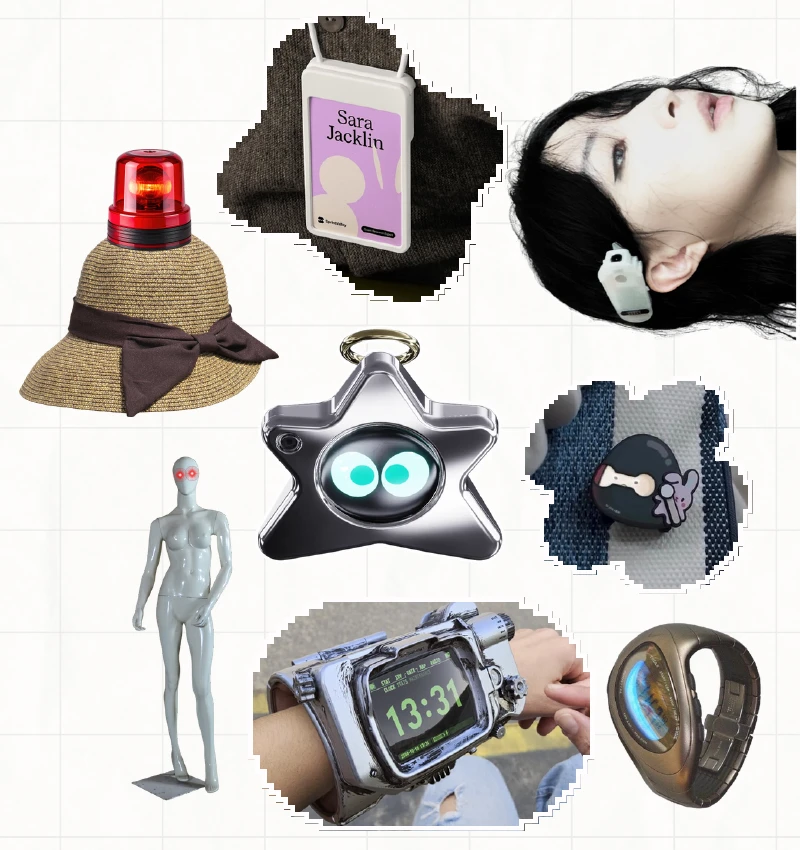
Sketching around the screen
An e-ink name tag was my first design direction, but a good E-ink display was outside my budget, so I switched to a 1.28-inch round TFT LCD. After deciding on the shape and size of the screen, I used Figma to sketch my first 2D prototypes of the form factor of this device.
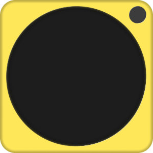
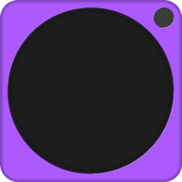
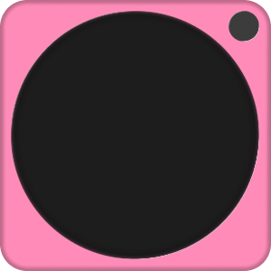
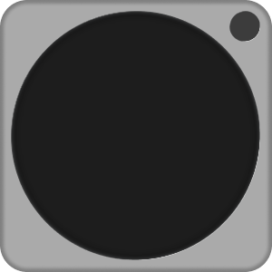
The parts list settled around an ESP32-S3-Zero, the round screen, a battery, and USB-C charging. I still had to decide how CAP would alert me beyond Cappy’s display; that eventually became the vibration motor.
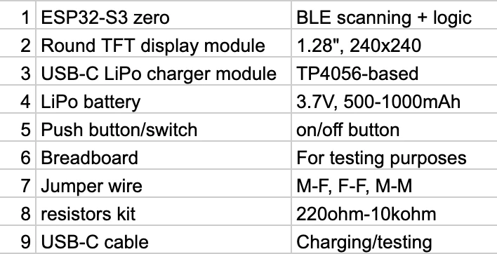
03 / The first build
Figuring out the core
I went shopping for parts on SP Road in Bengaluru, asked friends who knew electronics for help, and got my ESP32’s RGB LED cycling through colours. It was a small win that made the rest feel possible.
My first attempt at Bluetooth detection was much less successful. I asked an LLM for code to detect my Apple Watch and expected it to be straightforward. Modern devices randomize Bluetooth identifiers and don’t announce themselves with a stable, obvious name; my first few attempts failed because I didn't understand modern Bluetooth protocols yet.
I found a starting point in Nearby Glasses, an open-source Android app that looks for signs of smart glasses in Bluetooth broadcasts. I adapted that approach for the ESP32. I didn’t have smart glasses on hand, so I taught CAP to recognise my Nothing earphones and used them to test whether detection worked.
Watch my early detection testThe first body
To design the body my device will inhabit, I learned Fusion 360 through YouTube. I measured my components with a measuring tape and made the case as compact as I could. I remembered tolerances but forgot how much space jumper wires take up. I also left out a USB cutout.
I had to leave the blue V1 case open to connect and power the electronics. The same prototype could show the form with the shell closed or demo the circuit with it open. Making it do both gave me a clear brief for version two.
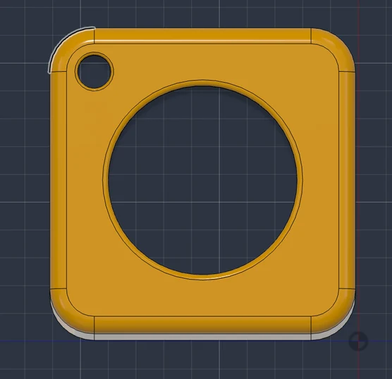
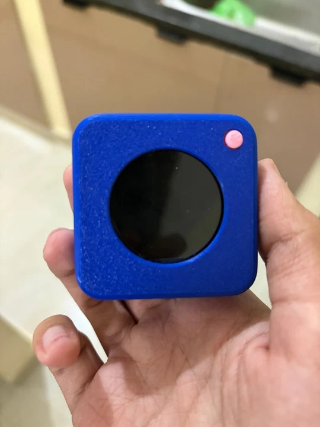
04 / Cappy’s personality
Giving Cappy a personality
Once detection was running, I wanted more than an LED changing colour. Inspired by lilguy from my mood board, I designed Cappy’s eyes and animations in After Effects, exported GIFs, and used Google’s Antigravity AI to help translate the movement into code that could run on the ESP32.
I gave him happy, curious, angry, and sleepy expressions. White eyes look around when the coast is clear, yellow eyes notice a matching signal, and red eyes object when it gets closer. He could also doze off, which made waking him feel like the next interaction to build.
After feedback on my first prototype, I went back to the breadboard with an ADXL345 accelerometer and a vibration motor. I tested and calibrated double-knock detection, then used it to wake Cappy into a groggy state. The motor added a sharp vibration for curious and a double vibration for angry, so the wearer could feel the alert without checking the screen.
Another fun last moment addition was the Rage Mode, if someone keeps coming closer after the angry warning, Cappy flashes red while CAP gives three buzzes. It felt like the natural extreme of the character I’d already made.
Watch my early animation test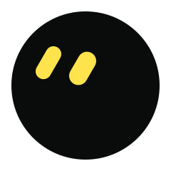
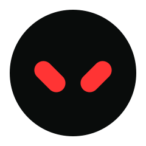
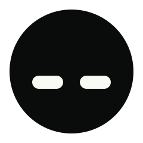
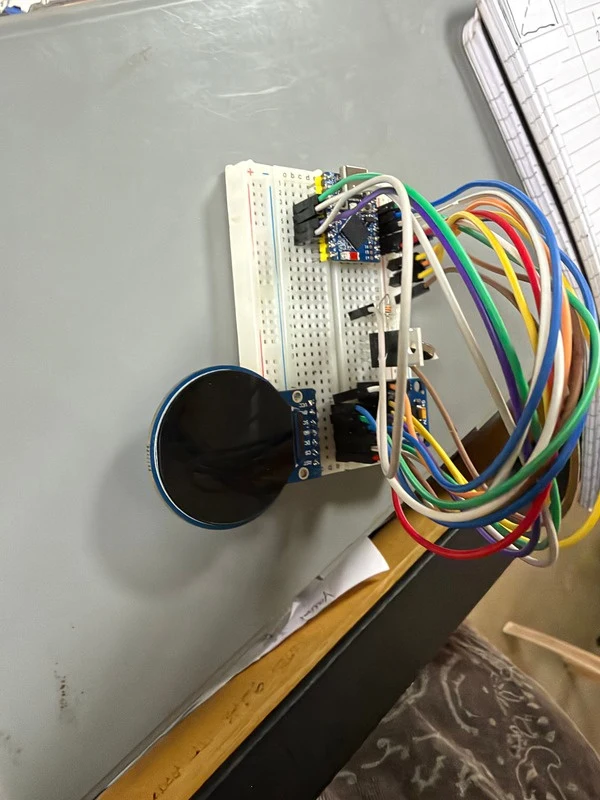
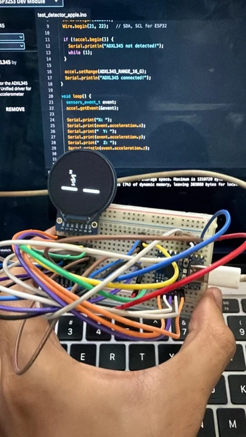
05 / CAP 2.0
Making room for the whole circuit
I initially wanted to shrink the CAP wearable further. With my current parts that wasn’t realistic, and buying integrated micro-hardware would mean starting over and spending roughly twice as much. After talking it through with my professor, I sized up instead: more room for the electronics, and a face people could see.
I redesigned the CAP 2.0 enclosure in Fusion 360 with proper screen support, a snap-fit connection between the halves, a physical switch slot, and USB-C access. This time I was designing around the actual circuit, learning from my last experience. The orange colour was not part of my original plan but after looking at the filament in Srishti's 3D lab it all came together.
Then came the bit I’d been putting off: soldering. The lab technician and my friend helped me move everything off the breadboard and connect the display, accelerometer, motor, battery, charging circuit, and switch. Without their help, I could very easily have fried the ESP32.
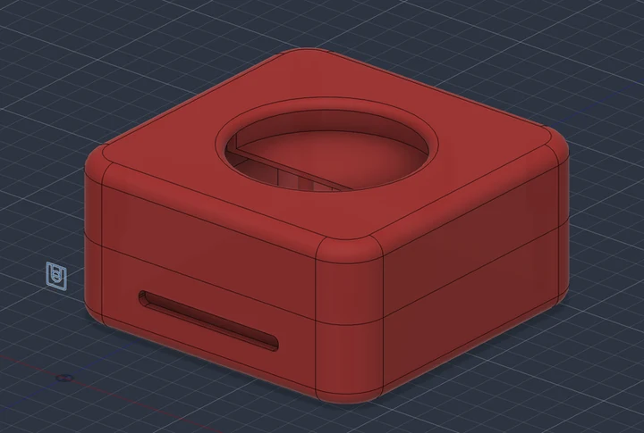
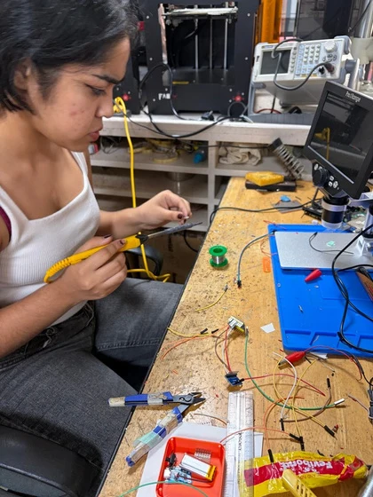
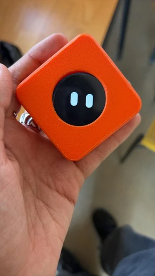
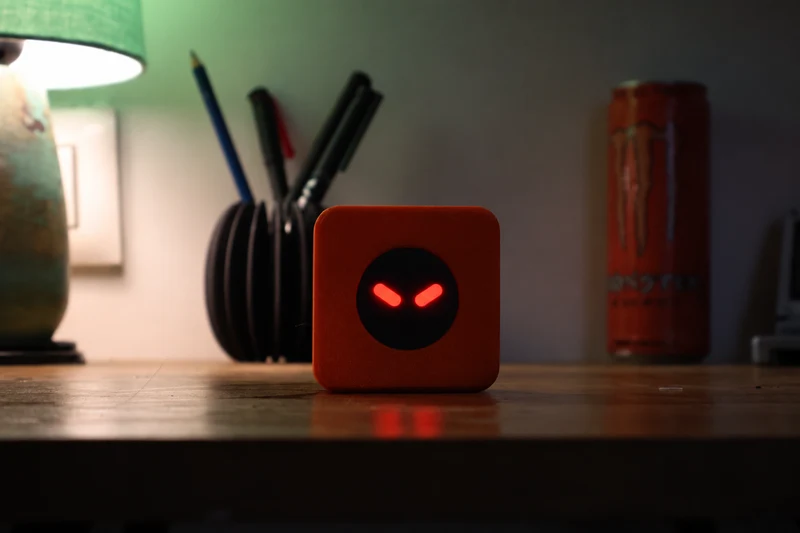
06 / Firmware
How I turn a signal into a reaction
Once CAP could pick up a matching Bluetooth signal, I had to decide when Cappy should react. I told Google’s Antigravity how I wanted him to respond. It set up NimBLE for Bluetooth scanning on the ESP32 and tuned when the alerts kicked in.
Keeping Cappy’s alerts steady
- Smooth out sudden jumps. A stronger Bluetooth signal can be a clue that a device is closer. CAP blends new readings with earlier ones so a brief spike carries less weight.
- Space out alert changes. CAP gives each alert a moment before it can change again. This keeps Cappy from flipping between expressions when the signal hovers near the point where he would switch.
As the signal gets stronger, Cappy can go from curious to angry to Rage Mode. CAP pairs those reactions with one, two, or three buzzes.
When CAP stops hearing a match, Cappy goes back to happy. After 30 seconds of quiet he gets sleepy, and at 60 seconds he falls asleep. Two knocks wake him up.
In tests with my Nothing earphones, Cappy switched from curious to angry at under a metre in some rooms and around 3.5 m in others. I still need to test how far away actual smart glasses trigger an alert.
Demo firmware settings and wiring
Cappy entered Angry at −73 dBm and Rage Mode at −55 dBm or stronger. To leave those states, the signal had to drop below −78 dBm and −62 dBm, respectively. The demo firmware waited at least a second between alert changes and cleared the alert after 1.5 seconds without a match.
I used LovyanGFX for the eye animations, targeting around 30 frames per second. The 3.3 V screen used a 40 MHz SPI connection.
| Part | Connection | ESP32-S3 GPIO |
|---|---|---|
| GC9A01 screen | SCLK / MOSI | 12 / 11 |
| GC9A01 screen | CS / DC / RST | 10 / 9 / 8 |
| ADXL345 | SDA / SCL / INT1 | 1 / 2 / 3 |
| Vibration motor driver | MOSFET control | 4 |
07 / Demo day
Presenting CAP, introducing Cappy
With the CAP prototype nearly ready, I still needed actual Ray-Ban Meta glasses for my final prototype showcase. After failing to find someone on campus who could assist me with this I went to Reddit and WhatsApp marketplace groups and received two leads: one was understandably nervous about lending expensive glasses to a stranger, and the other unfortunately disappeared the second I mentioned travelling from Yelahanka to JP Nagar.
So I improvised a very special pair of “unreleased” Meta glasses. For the live class demo, my classmate wore the props while carrying my Nothing earphones, which I’d added to CAP’s target list.
As she approached, Cappy’s eyes changed and the vibration motor kicked in. Once she stepped away and he dozed off, I knocked twice to wake him.
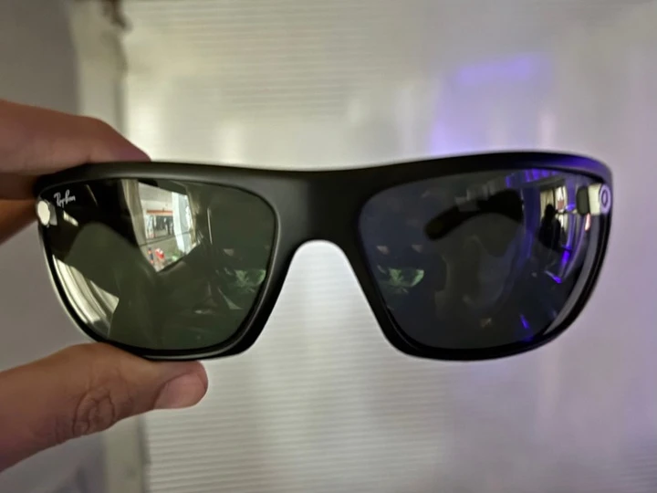
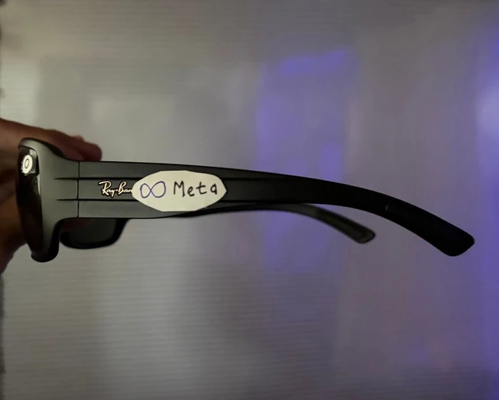
A minimal booth, my final poster, and CAP on my body were enough to let the interaction speak for itself. I enjoyed how quickly people went from meeting the character to talking about privacy and the technology around us.
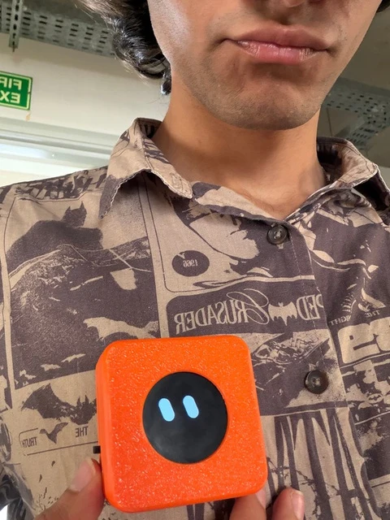
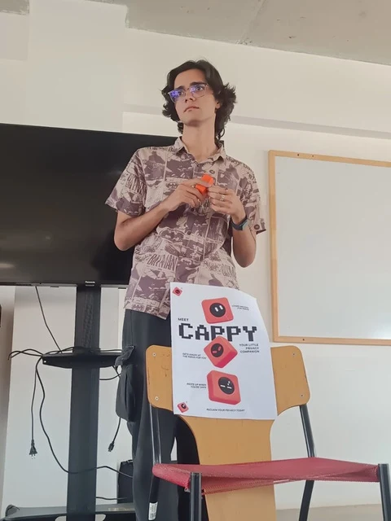
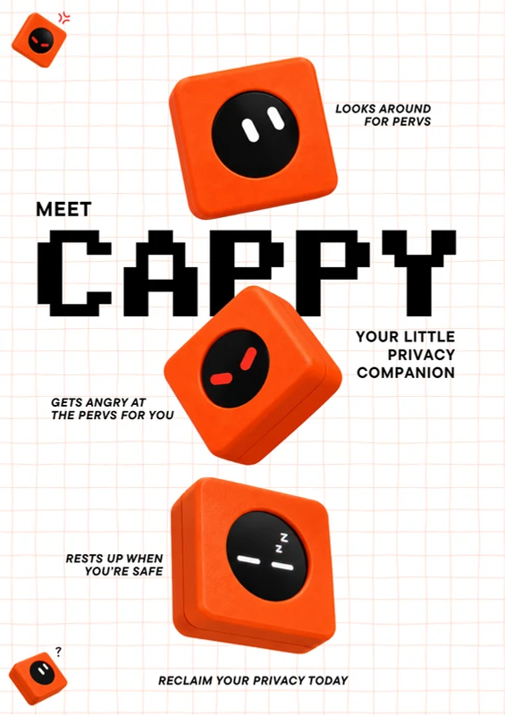
THE FINAL POSTER
Letting Cappy’s personality lead
I kept the poster light on text and let Cappy’s personality take the lead: he looks around, gets angry for you, and rests when you’re safe.
View the full posterWhat worked for me?
I brought interface design, CAD, embedded code, and electronics together into a working wearable. The face, buzzes, and knock-to-wake gave people an easy way into the project. The conversations they started helped me understand critical making through practice.
What did wearing it reveal?
CAP’s weight made it sag on my shirt. I kept adjusting or holding it up to see Cappy on the screen. I want to improve the attachment and switch from safety pins to a magnetic system so the wearable stays in place without needing that attention.
What still needs testing?
I saw the curious-to-angry transition shift from under 1m to around 3.5m between rooms. I need to tune the signal behaviour and test with actual smart glasses across device states and environments.
Where would I take CAP next?
I’m still excited to make this a more feasible product for the people around me. A better clip, smaller integrated electronics, and trials with real camera wearables are all directions I’d like to explore, either personally or through my capstone. Sharing the build openly could also give the project a life as tactical media beyond my studio.
Thanks and References
I designed and built CAP as part of my M.A. Experience Design studio, By Any Media Necessary, at Srishti Manipal Institute of Art, Design and Technology.
Thank you to Vineeta for the orientation exercise that started the question, Manuel for the feedback that helped me rethink the form, and Nataraju and Sudarsini for helping me with electronics and soldering. Sudarsini also brought our improvised demo to life.
Matt Ratto’s Critical Making, Alexander R. Galloway’s Protocol, and the Luddite movement helped me connect making with resistance.
I adapted the detection approach from Nearby Glasses. lilguy inspired Cappy’s character, and I used AI assistance to develop the embedded code and recreate my animations.